Candidate Gene Analysis
For manuscript: Neurogenomic landscape of male cooperative behavior in a wild bird
Peri Bolton
2022-01-13
This document contains the differential expression results from DESeq2 for our candidate genes. These candidates are: AR, SRD5A2, LOC113993669, ESR1, ESR2, PGR, GNRH1, PRL, PRLR, VIP, VIPR1, VIPR2, LOC113983511, OXTR, LOC113983498, AVPR1A, AVPR1B, LOC113982601. LOC113983511 is OXT (Mesotocin), LOC113993669 is CYP19A1 (Aromatase), and LOC113983498 is vasotocin-neurophysin (AVP or Arginine-Vasotocin). Originally I was correcting for multiple comparisons using the raw p-values for the number of genes expressed in a tissue (using Benjamini-Hochberg). However, these were more conservative than the corrected p-values from DESeq2. Therefore, i only present the corrected p-values from DESeq2 based on the number of genes expressed in that tissue.
LogfoldChange heatmaps
Another way to present the candidate gene data. White squares with NA indicate that the candidate gene is not expressed in that tissue. Coloured squares with NA indicate that either DESeq2 decided to exclude that gene in its automatic filtering - or I excluded it because it was giving spurious results - which are shown below in the individual gene plots.
results_data_status<- results_data[grepl("status", results_data$Test,ignore.case = TRUE),]
results_data_status$gene<- factor(results_data_status$gene, levels=c("AR", "SRD5A2", "LOC113993669", "ESR1", "ESR2", "PGR","GNRH1", "PRL","PRLR","VIP", "VIPR1", "VIPR2","LOC113983511", "OXTR", "LOC113983498", "AVPR1A", "AVPR1B", "LOC113982601"))
results_data_status$gene<- plyr::revalue(results_data_status$gene, replace=c("LOC113993669"="CYP19A1","LOC113983511"="OXT", "LOC113983498"="AVP", "LOC113982601"="AVPR2"))
res_data_status<- results_data_status[,c("log2FoldChange", "gene","Tissue")]
res_data_status<- dcast(res_data_status, gene ~Tissue, value.var="log2FoldChange")
rownames(res_data_status)<- res_data_status$gene
res_data_status$gene<- NULL
res_data_status<- as.matrix(res_data_status)
res_int<- results_int[,c("log2FoldChange", "gene","Tissue")]
res_int<- dcast(res_int, gene ~Tissue, value.var="log2FoldChange")
rownames(res_int)<- res_int$gene
res_int$gene<- NULL
res_int<- as.matrix(res_int)
p_data_status<- results_data_status[,c("pvalue", "gene","Tissue")]
p_data_status<- dcast(p_data_status, gene ~Tissue, value.var="pvalue")
rownames(p_data_status)<- p_data_status$gene
p_data_status$gene<- NULL
p_data_status<- as.matrix(p_data_status)
#p_data_status<- formatC(p_data_status,format = "e",digits = 2)
#pheatmap(res_data_status, na_col = "white", cluster_rows=FALSE, cluster_cols=FALSE, scale="column", border=NA, display_numbers = p_data_status, main="Log2FoldChange in Gene Expression according to Status", color=blueWhiteRed(200))
sig<- matrix("", nrow=nrow(p_data_status),ncol=ncol(p_data_status))
res<- matrix("", nrow=nrow(p_data_status),ncol=ncol(p_data_status))
logsig<- matrix("", nrow=nrow(p_data_status),ncol=ncol(p_data_status))
for(i in 1:nrow(p_data_status)){
for(j in 1:ncol(p_data_status)){
sig[i,j]<- as.numeric(ifelse(p_data_status[i,j]<0.05, signif(p_data_status[i,j],1),""))
#res[i,j]<- as.numeric(ifelse(p_data_status[i,j]<0.05 & res_data_status[i,j]<0,-1,ifelse(p_data_status[i,j]<0.05 & res_data_status[i,j]>0,1,NA)))
}
}
res<- ifelse(res_data_status<0 & sig!="",-1,ifelse(res_data_status>0 & sig!="",1,NA))
logsig<- ifelse(res==-1,-(-log10(p_data_status)), ifelse(res==1, -log10(p_data_status),NA))
sig<- ifelse(is.na(sig),"", as.character(sig))
#drop OXT and AVP because of their weird expression
#res<- res[-c(13,15),]
#sig<- sig[-c(13,15),]
#logsig<- logsig[-c(13,15),]
pheatmap(res, na_col = "white", cluster_rows=FALSE, cluster_cols=FALSE, scale="none", border=NA, display_numbers = sig, main="", color=blueWhiteRed(20), border_color = "grey90", legend=FALSE)


Gonads
The next sections are scatter plots for each of the tissues showing what each of the genes are doing for manual validation.
| Test | gene | baseMean | log2FoldChange | lfcSE | stat | pvalue | padj |
|---|---|---|---|---|---|---|---|
| mean T | AVPR1A | 188.293 | 0.793 | 0.195 | 4.059 | 0.000 | 0.014 |
| mean T | PRLR | 1011.603 | 0.324 | 0.139 | 2.332 | 0.020 | 0.442 |
| Strength | VIPR1 | 120.523 | 0.459 | 0.200 | 2.292 | 0.022 | 0.590 |
Here only the data with continuous variables were at all significant so these will be plotted with the extracted Normalized data.

Status specific gene expression in the Gonads
If not already identified as a possible interaction from multiple incidences in the single trait comparison, I also used DESeq2 to extract possible interactions.
Then, I am going to use AIC on simple linear models to decide amongst models to decide whether interaction effects or single term models better explain the data.
Note that the DESeq2 model for Status only is actually GeneExp ~ Batch + Status, and includes 4 additional samples. However, the linear models here don’t differ in biological interpretation.
VIPR_GON_lm_Status<- lm(VIPR2 ~ Year + Status, data=VIPR2)
VIPR_GON_lm_meanT<- lm(VIPR2 ~ Year + mean_T, data=VIPR2)
VIPR_GON_lm_int<- lm(VIPR2 ~ Year + Status*mean_T, data=VIPR2)
#against the NULL model
VIPR_GON_lm_null<- lm(VIPR2 ~ Year, data=VIPR2)
model=c("VIPR2 ~ Year", "VIPR2 ~ Year + Status", "VIPR2 ~ Year + mean T","VIPR2 ~ Year + Status * mean T")
AIC=c(AIC(VIPR_GON_lm_null), AIC(VIPR_GON_lm_Status),AIC(VIPR_GON_lm_meanT),AIC(VIPR_GON_lm_int))
deltaAIC<- c(NA, AIC[1]-AIC[2], AIC[1]-AIC[3], AIC[1]-AIC[4])
lm_p<- c(anova(VIPR_GON_lm_null)$'Pr(>F)'[1],anova(VIPR_GON_lm_Status)$'Pr(>F)'[2],anova(VIPR_GON_lm_meanT)$'Pr(>F)'[2], anova(VIPR_GON_lm_int)$'Pr(>F)'[4])
DESeq2_raw_p=c(NA,results_gon$pvalue[results_gon$gene=="VIPR2" & results_gon$Test=="Status"], results_gon$pvalue[results_gon$gene=="VIPR2" & results_gon$Test=="mean T"], results_int$pvalue[results_int$gene=="VIPR2" & results_int$Tissue=="GON"])
knitr::kable(data.frame(model, AIC, deltaAIC, lm_p, DESeq2_raw_p),row.names=FALSE, padding=20, caption="Model comparisons in the Gonads for VIPR2") %>% kable_styling()| model | AIC | deltaAIC | lm_p | DESeq2_raw_p |
|---|---|---|---|---|
| VIPR2 ~ Year | 150.6986 | NA | 0.3814937 | NA |
| VIPR2 ~ Year + Status | 152.5878 | -1.8892097 | 0.7791835 | 0.9993856 |
| VIPR2 ~ Year + mean T | 151.2701 | -0.5715250 | 0.3139082 | 0.0614576 |
| VIPR2 ~ Year + Status * mean T | 150.0352 | 0.6633609 | 0.0933626 | 0.0061059 |
b<- ggtexttable(data.frame(model=model, AIC=signif(AIC,4), deltaAIC=signif(deltaAIC,1), lm_p=signif(lm_p,1), DESeq_raw_p=signif(DESeq2_raw_p,1)), rows=NULL)
figure<- ggarrange(a,b, labels=c("A","B"), nrow=2)
ggsave(filename="../Candidate_gene_results/GON_interaction.png", figure,device="png", width=15, height=20, units="cm", dpi=300, bg="white")Pituitary
| Test | gene | baseMean | log2FoldChange | lfcSE | stat | pvalue | padj |
|---|---|---|---|---|---|---|---|
| Strength | AVPR1B | 1814.603 | 0.298 | 0.137 | 2.172 | 0.030 | 0.446 |
| Status | ESR1 | 1725.149 | -0.661 | 0.253 | -2.613 | 0.009 | 0.433 |
| Strength | ESR2 | 15.496 | -0.735 | 0.364 | -2.020 | 0.043 | 0.509 |
| mean T | LOC113983498 | 123.156 | 6.417 | 1.578 | 4.066 | 0.000 | 0.023 |
| Strength | LOC113983498 | 118.037 | 4.366 | 1.243 | 3.513 | 0.000 | 0.074 |
| mean T | LOC113983511 | 107.249 | 4.522 | 1.424 | 3.176 | 0.001 | 0.190 |
| Strength | LOC113983511 | 62.816 | 3.493 | 1.211 | 2.885 | 0.004 | 0.211 |
| Strength | PRL | 379818.057 | -0.553 | 0.136 | -4.059 | 0.000 | 0.031 |
| mean T | VIPR2 | 322.934 | -0.519 | 0.218 | -2.382 | 0.017 | 0.632 |
| Strength | VIPR2 | 335.526 | -0.426 | 0.160 | -2.662 | 0.008 | 0.279 |

Status specific gene expression in the Pituitary
I am excluding AVP and OXT because the expression patterns are odd.
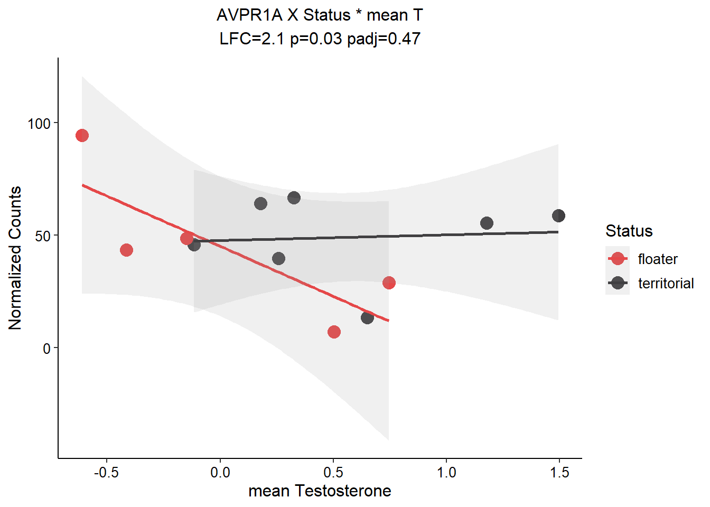
| model | AIC | deltaAIC | lm_p | DESeq2_raw_p |
|---|---|---|---|---|
| AVPR1A ~ Batch | 115.118 | NA | 0.909 | NA |
| AVPR1A ~ Batch + Status | 117.005 | -1.886 | 0.776 | 0.786 |
| AVPR1A ~ Batch + mean T | 115.991 | -0.873 | 0.371 | 0.512 |
| AVPR1A ~ Batch + Status * mean T | 113.144 | 1.975 | 0.073 | 0.030 |
Ventromedial Hypothalamus
| Test | gene | baseMean | log2FoldChange | lfcSE | stat | pvalue | padj |
|---|---|---|---|---|---|---|---|
| Strength | AR | 951.594 | 0.632 | 0.246 | 2.567 | 0.010 | 0.104 |
| Status | ESR2 | 944.935 | -0.445 | 0.150 | -2.962 | 0.003 | 0.660 |
| Strength | GNRH1 | 40.945 | 2.786 | 1.312 | 2.124 | 0.034 | 0.281 |
| mean T | LOC113982601 | 10.815 | -1.125 | 0.422 | -2.667 | 0.008 | 0.588 |
| mean T | LOC113983498 | 1481.917 | 2.511 | 0.810 | 3.102 | 0.002 | 0.327 |
| mean T | LOC113983511 | 1460.675 | 3.140 | 1.088 | 2.887 | 0.004 | 0.394 |

Nothing convincingly significant after FDR correction!
Status specific gene expression in the VMH
PGR
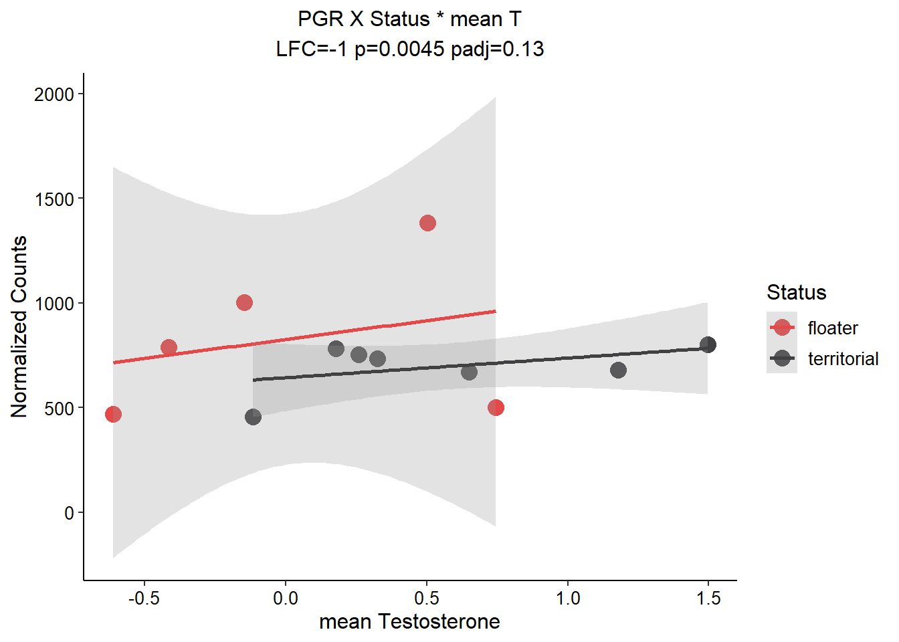
Rubbish.
GNRH1
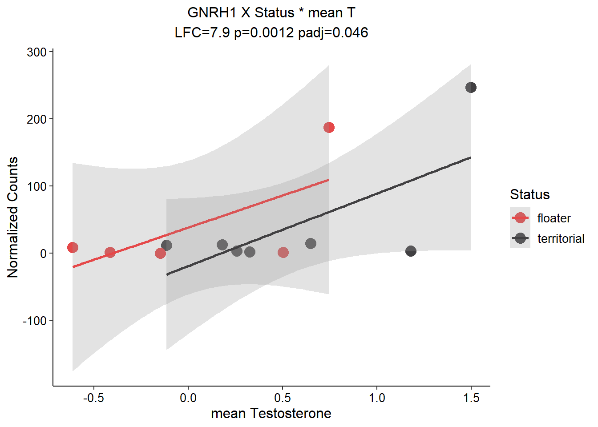
Also Rubbish.
AVPR1A
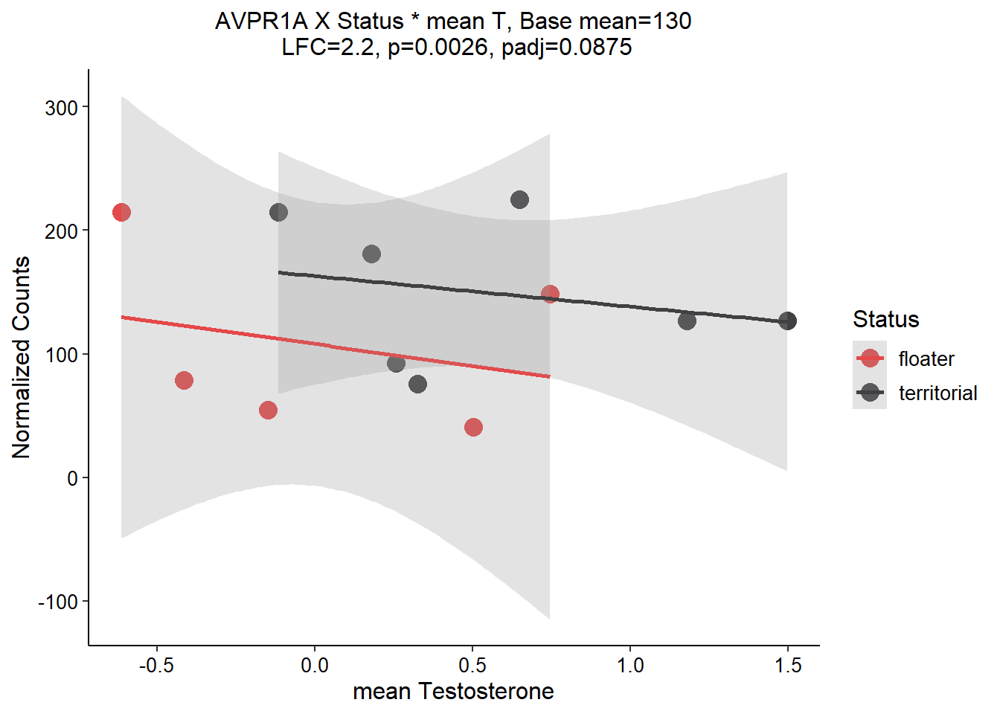
Also Rubbish.
Anterior Hypothalamus
| Test | gene | baseMean | log2FoldChange | lfcSE | stat | pvalue | padj |
|---|---|---|---|---|---|---|---|
No candidate genes significant in the AH
No interaction effects
Paraventricular Nucleus
| Test | gene | baseMean | log2FoldChange | lfcSE | stat | pvalue | padj |
|---|---|---|---|---|---|---|---|
| mean T | AR | 543.241 | 0.353 | 0.146 | 2.414 | 0.016 | 0.552 |
| Strength | AR | 543.241 | 0.192 | 0.091 | 2.113 | 0.035 | 0.584 |
| Status | ESR2 | 818.718 | -0.641 | 0.235 | -2.725 | 0.006 | 0.177 |
| Strength | LOC113982601 | 14.871 | 0.498 | 0.220 | 2.263 | 0.024 | 0.581 |
| Strength | LOC113983498 | 30862.339 | -0.504 | 0.228 | -2.216 | 0.027 | 0.581 |
| Strength | LOC113983511 | 32779.237 | -0.331 | 0.158 | -2.096 | 0.036 | 0.594 |
| Status | VIPR1 | 380.233 | 0.307 | 0.136 | 2.257 | 0.024 | 0.358 |

Interaction in the Paraventricular Nucleus
AR
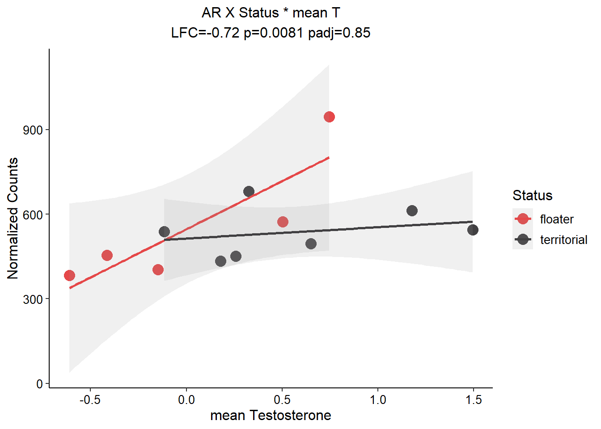
| model | AIC | deltaAIC | lm_p | DESeq2_raw_p |
|---|---|---|---|---|
| AR ~ 1 | 157.941 | NA | NA | NA |
| AR ~ Status | 159.910 | -1.969 | 0.876 | 0.847 |
| AR ~ mean T | 156.546 | 1.394 | 0.101 | 0.016 |
| AR ~ Strength | 155.474 | 2.467 | 0.060 | 0.035 |
| AR ~ Status * mean T | 152.126 | 5.815 | 0.039 | 0.008 |
Medial Preoptic Area (POM)
| Test | gene | baseMean | log2FoldChange | lfcSE | stat | pvalue | padj |
|---|---|---|---|---|---|---|---|
| mean T | AR | 794.629 | 0.665 | 0.128 | 5.191 | 0.000 | 0.000 |
| mean T | GNRH1 | 1318.753 | 0.399 | 0.144 | 2.769 | 0.006 | 0.208 |
| mean T | LOC113993669 | 1533.720 | 0.546 | 0.227 | 2.405 | 0.016 | 0.370 |
| mean T | PRLR | 4007.589 | 0.254 | 0.076 | 3.360 | 0.001 | 0.054 |
| Status | AR | 828.546 | 0.667 | 0.189 | 3.521 | 0.000 | 0.347 |
| Status | PGR | 1060.152 | 0.443 | 0.161 | 2.747 | 0.006 | 0.701 |
| Status | PRLR | 4693.061 | 0.232 | 0.096 | 2.412 | 0.016 | 0.910 |

Interaction in the Medial Preoptic Area
###VIP
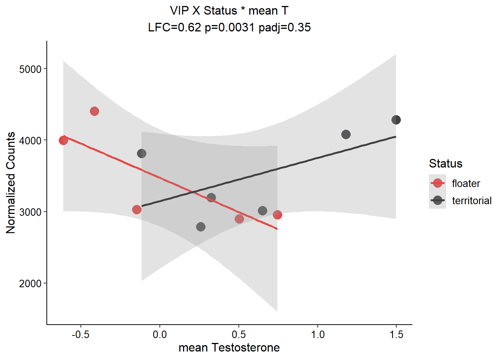
| model | AIC | deltaAIC | lm_p | residual_df | DESeq2_raw_p |
|---|---|---|---|---|---|
| VIP ~ 1 | 175.598 | NA | NA | 10 | NA |
| VIP ~ Status | 177.558 | -1.960 | 0.861 | 9 | 0.656 |
| VIP ~ mean T | 177.593 | -1.995 | 0.951 | 9 | 0.948 |
| VIP ~ Status * mean T | 173.806 | 1.791 | 0.032 | 7 | 0.003 |
Checking other multiple hits in the POM
AR
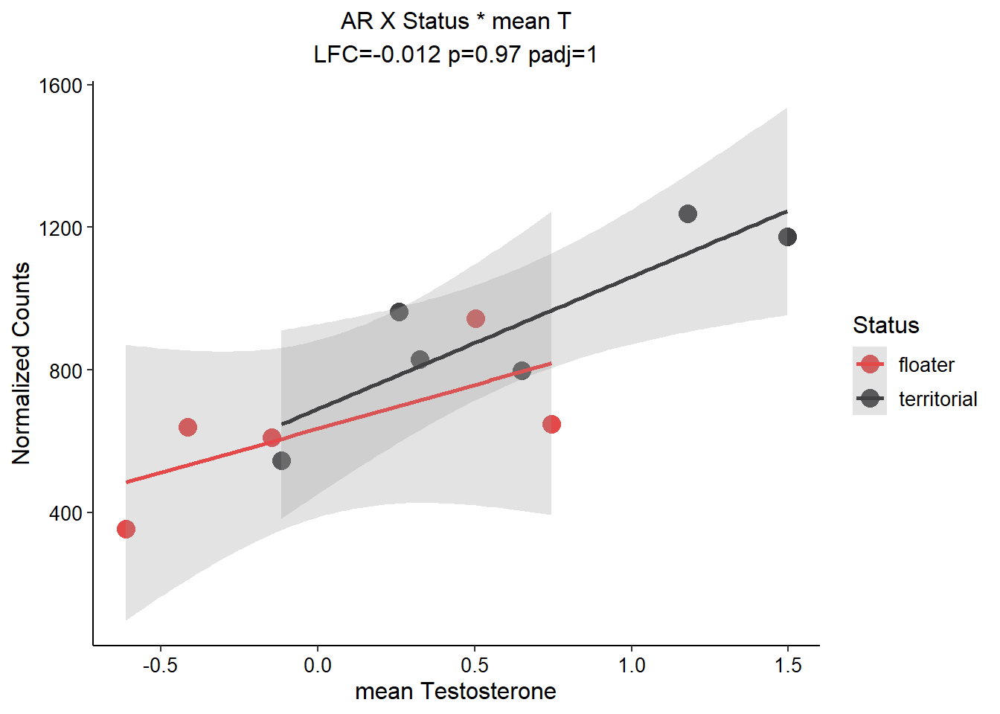| model | AIC | deltaAIC | lm_p | DESeq2_raw_p |
|---|---|---|---|---|
| AR ~ 1 | 157.332 | NA | NA | NA |
| AR ~ Status | 155.312 | 2.020 | 0.077 | 0.00 |
| AR ~ mean T | 144.968 | 12.364 | 0.001 | 0.00 |
| AR ~ Status * mean T | 147.226 | 10.106 | 0.498 | 0.97 |
PRLR
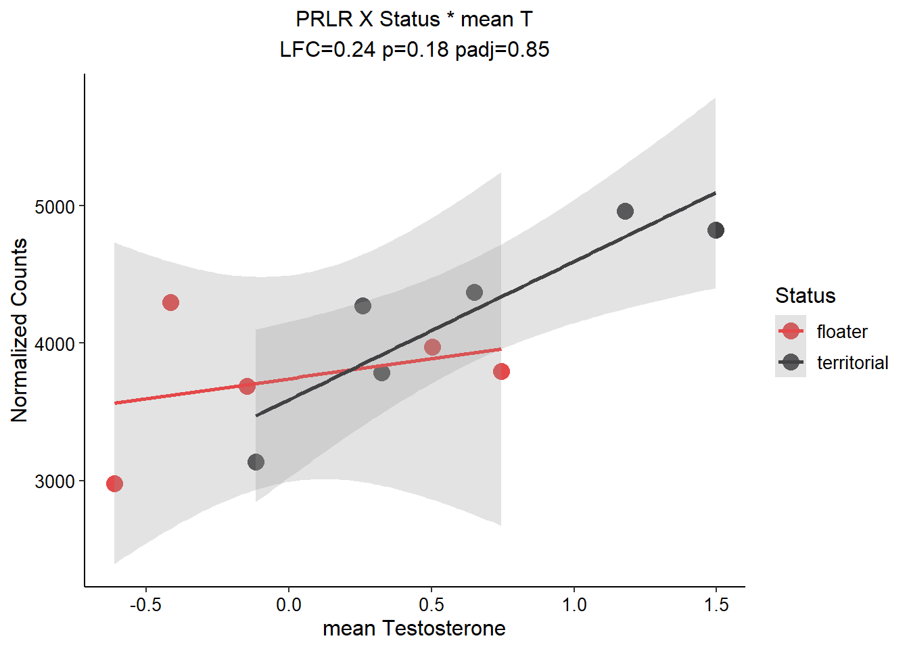| model | AIC | deltaAIC | lm_p | DESeq2_raw_p |
|---|---|---|---|---|
| PRLR ~ 1 | 175.706 | NA | NA | NA |
| PRLR ~ Status | 175.772 | -0.066 | 0.221 | 0.016 |
| PRLR ~ mean T | 168.500 | 7.207 | 0.007 | 0.001 |
| PRLR ~ Status * mean T | 169.436 | 6.271 | 0.179 | 0.178 |

Dorsomedial Intercollicular Nucleus (ICo)
| Test | gene | baseMean | log2FoldChange | lfcSE | stat | pvalue | padj |
|---|---|---|---|---|---|---|---|
| mean T | VIP | 405.910 | -0.983 | 0.387 | -2.542 | 0.011 | 0.172 |
| Strength | VIPR2 | 150.055 | -0.351 | 0.146 | -2.410 | 0.016 | 0.195 |

Interaction in the Ico
AVPR1A
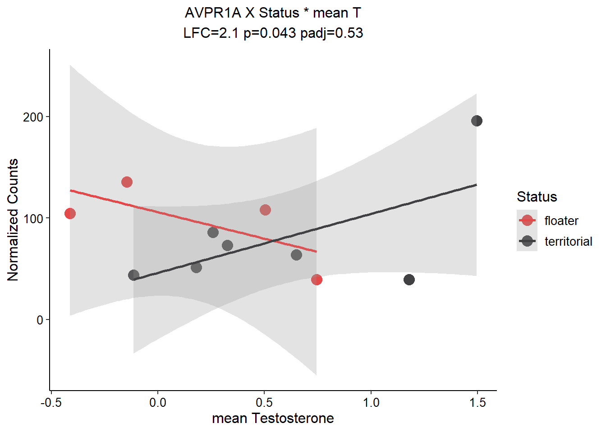
| model | AIC | deltaAIC | lm_p | DESeq2_raw_p |
|---|---|---|---|---|
| AVPR1A ~ Batch + Year | 123.327 | NA | 0.946 | NA |
| AVPR1A ~ Batch + Year + Status | 124.515 | -1.188 | 0.488 | 0.703 |
| AVPR1A ~Batch + Year + mean T | 125.008 | -1.681 | 0.664 | 0.649 |
| AVPR1A ~ Batch + Year + Status * mean T | 121.908 | 1.419 | 0.121 | 0.043 |
###AVP
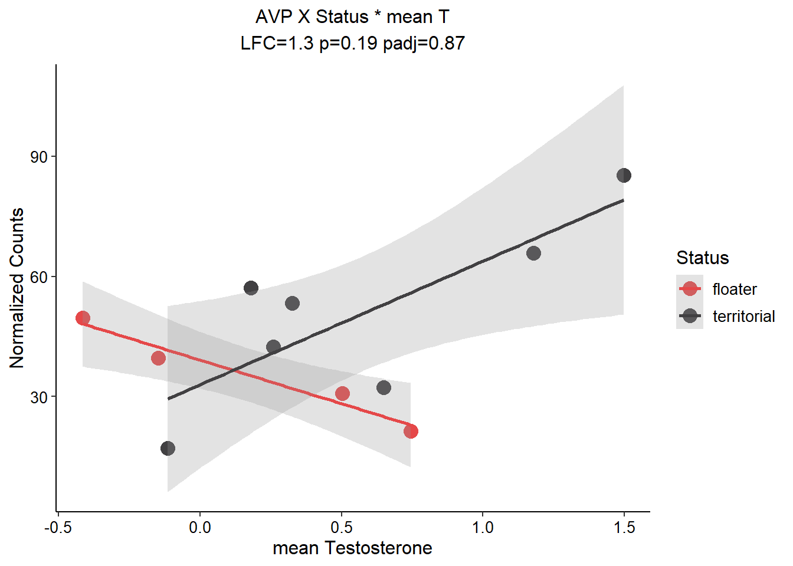
| model | AIC | deltaAIC | lm_p | DESeq2_raw_p |
|---|---|---|---|---|
| AVP ~ Batch + Year | 98.131 | NA | 0.376 | NA |
| AVP ~ Batch + Year + Status | 100.045 | -1.915 | 0.822 | 0.399 |
| AVP ~ Batch + Year + mean T | 97.357 | 0.774 | 0.199 | 0.323 |
| AVP ~ Batch + Year + Status * mean T | 95.611 | 2.520 | 0.124 | 0.186 |
###OXTR
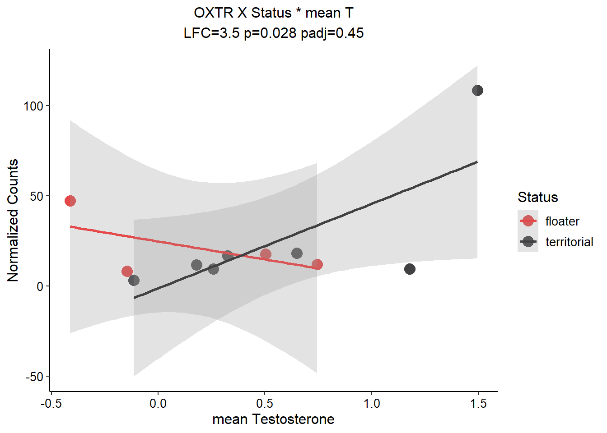| model | AIC | deltaAIC | lm_p | DESeq2_raw_p |
|---|---|---|---|---|
| OXTR ~ Batch + Year | 110.127 | NA | 0.341 | NA |
| OXTR ~ Batch + Year + Status | 112.094 | -1.967 | 0.889 | 0.831 |
| OXTR ~ Batch + Year + mean T | 109.912 | 0.215 | 0.252 | 0.286 |
| OXTR ~ Batch + Year + Status * mean T | 105.092 | 5.035 | 0.062 | 0.028 |
Midbrain Central Gray (GCT)
| Test | gene | baseMean | log2FoldChange | lfcSE | stat | pvalue | padj |
|---|---|---|---|---|---|---|---|
| Strength | AR | 149.977 | 0.215 | 0.100 | 2.148 | 0.032 | 0.530 |
| Status | LOC113983511 | 8.100 | -3.087 | 1.103 | -2.799 | 0.005 | 0.175 |
| mean T | LOC113993669 | 17.704 | -1.269 | 0.420 | -3.025 | 0.002 | 0.347 |
| mean T | PGR | 36.895 | -0.801 | 0.327 | -2.449 | 0.014 | 0.710 |
| Strength | PGR | 36.895 | -0.656 | 0.194 | -3.373 | 0.001 | 0.138 |
| mean T | VIP | 1047.430 | -0.831 | 0.316 | -2.629 | 0.009 | 0.589 |
| Status | VIP | 1036.449 | -0.852 | 0.427 | -1.995 | 0.046 | 0.637 |
| Strength | VIP | 1047.430 | -0.555 | 0.207 | -2.684 | 0.007 | 0.340 |

Interaction in the midbrain central gray
VIP

| model | AIC | deltaAIC | lm_p | DESeq2_raw_p |
|---|---|---|---|---|
| VIP ~ Batch | 192.194 | NA | 0.582 | NA |
| VIP ~ Batch + Status | 189.632 | 2.561 | 0.072 | 0.046 |
| VIP ~ Batch + mean T | 186.622 | 5.571 | 0.020 | 0.009 |
| VIP ~ Batch + Strength | 190.152 | 2.042 | 0.090 | 0.007 |
| VIP ~ Batch + Status * mean T | 179.398 | 12.796 | 0.025 | 0.005 |
PGR
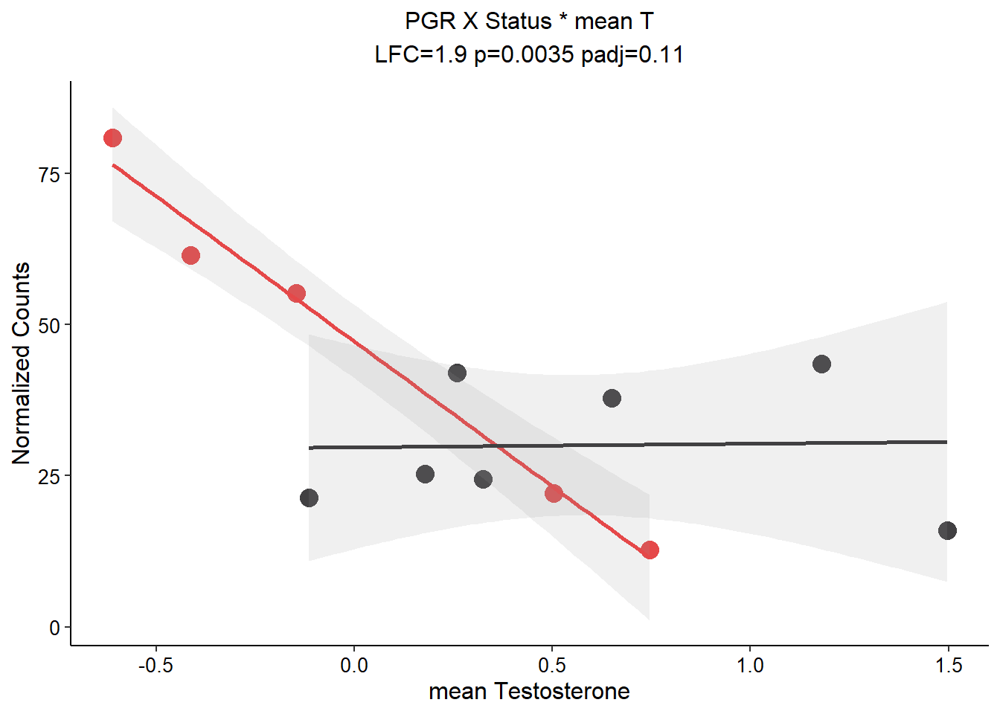
| model | AIC | deltaAIC | lm_p | DESeq2_raw_p |
|---|---|---|---|---|
| PGR ~ Batch | 111.711 | NA | 0.883 | NA |
| PGR ~ Batch + Status | 111.553 | 0.158 | 0.216 | 0.146 |
| PGR ~ Batch + mean T | 107.224 | 4.487 | 0.032 | 0.014 |
| PGR ~ Batch + Strength | 107.083 | 4.628 | 0.030 | 0.001 |
| PGR ~ Batch + Status * mean T | 95.749 | 15.962 | 0.004 | 0.004 |
ESR1
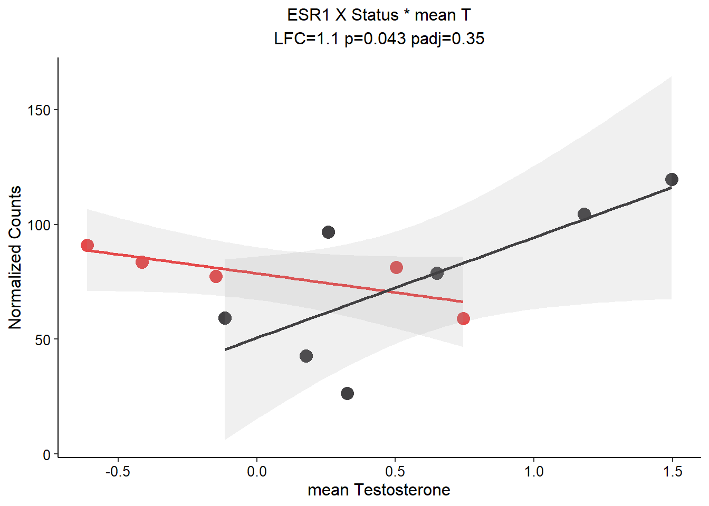
| model | AIC | deltaAIC | lm_p | DESeq2_raw_p |
|---|---|---|---|---|
| ESR1 ~ Batch | 117.237 | NA | 0.681 | NA |
| ESR1 ~ Batch + Status | 119.168 | -1.931 | 0.825 | 0.821 |
| ESR1 ~ Batch + mean T | 117.949 | -0.712 | 0.339 | 0.428 |
| ESR1 ~ Batch + Status * mean T | 113.442 | 3.796 | 0.041 | 0.043 |
###PRLR
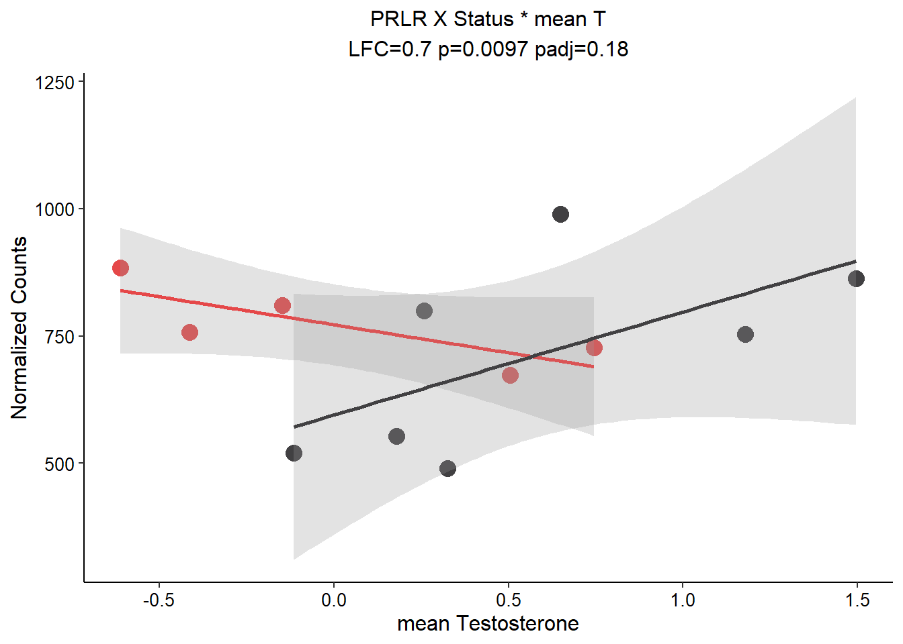
| model | AIC | deltaAIC | lm_p | DESeq2_raw_p |
|---|---|---|---|---|
| PRLR ~ Batch | 159.130 | NA | 0.495 | NA |
| PRLR ~ Batch + Status | 160.715 | -1.585 | 0.587 | 0.542 |
| PRLR ~ Batch + mean T | 160.618 | -1.489 | 0.547 | 0.535 |
| PRLR ~ Batch + Status * mean T | 155.739 | 3.391 | 0.041 | 0.010 |
Nucleus Taenia (TnA)
| Test | gene | baseMean | log2FoldChange | lfcSE | stat | pvalue | padj |
|---|---|---|---|---|---|---|---|
| mean T | ESR2 | 182.462 | 0.810 | 0.248 | 3.269 | 0.001 | 0.079 |
| mean T | LOC113983498 | 65.301 | 0.835 | 0.426 | 1.962 | 0.050 | 0.480 |
| Status | AR | 604.216 | -0.420 | 0.185 | -2.274 | 0.023 | 0.521 |
| Status | LOC113983498 | 67.903 | 0.831 | 0.412 | 2.019 | 0.043 | 0.592 |
| Strength | AVPR1A | 172.360 | -0.708 | 0.349 | -2.025 | 0.043 | 0.605 |
| Strength | PGR | 27.859 | -0.353 | 0.173 | -2.043 | 0.041 | 0.595 |

Interaction in the Nucleus Taenia
CYP19A1
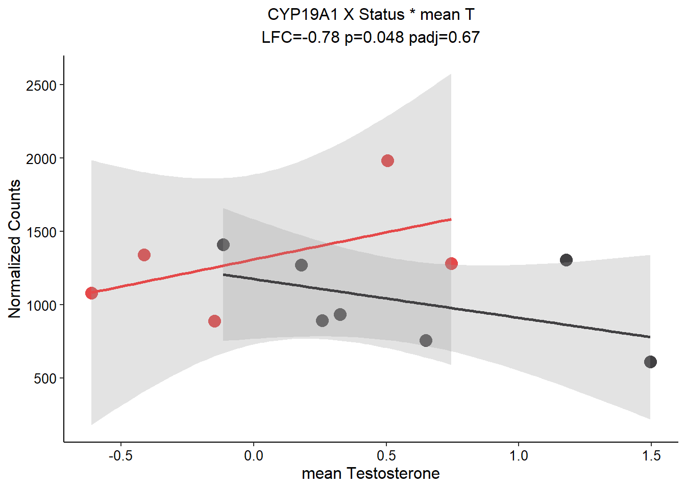
| model | AIC | deltaAIC | lm_p | DESeq2_raw_p |
|---|---|---|---|---|
| CYP19A1 ~ Batch | 180.778 | NA | 0.983 | NA |
| CYP19A1 ~ Batch + Status | 180.608 | 0.169 | 0.215 | 0.511 |
| CYP19A1 ~ Batch + mean T | 182.168 | -1.391 | 0.511 | 0.338 |
| CYP19A1 ~ Batch + Status * mean T | 180.918 | -0.140 | 0.156 | 0.048 |
PRLR
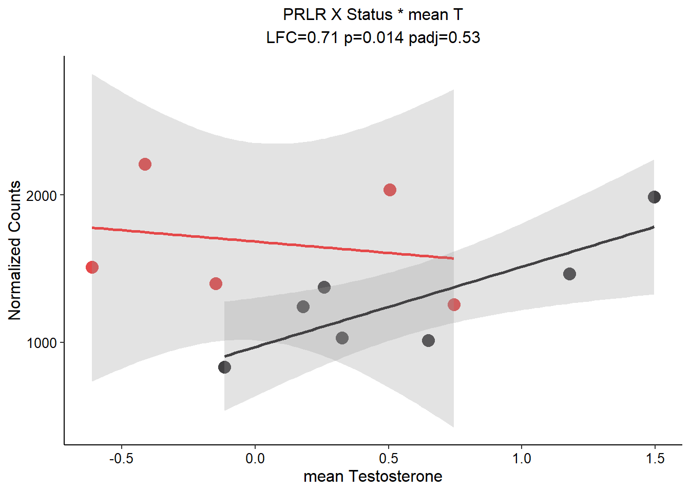
| model | AIC | deltaAIC | lm_p | DESeq2_raw_p |
|---|---|---|---|---|
| PRLR ~ Batch | 181.935 | NA | 0.144 | NA |
| PRLR ~ Batch + Status | 180.593 | 1.342 | 0.123 | 0.348 |
| PRLR ~ Batch + mean T | 183.635 | -1.700 | 0.644 | 0.570 |
| PRLR ~ Batch + Status * mean T | 179.433 | 2.502 | 0.105 | 0.014 |
VIP
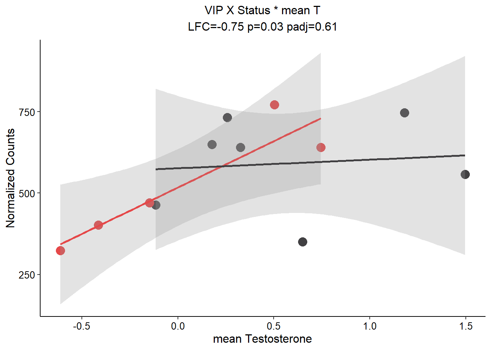
| model | AIC | deltaAIC | lm_p | DESeq2_raw_p |
|---|---|---|---|---|
| VIP ~ Batch | 158.993 | NA | 0.294 | NA |
| VIP ~ Batch + Status | 160.028 | -1.035 | 0.408 | 0.212 |
| VIP ~ Batch + mean T | 158.461 | 0.533 | 0.180 | 0.067 |
| VIP ~ Batch + Status * mean T | 158.497 | 0.496 | 0.143 | 0.030 |
nothing compelling.
VIPR1
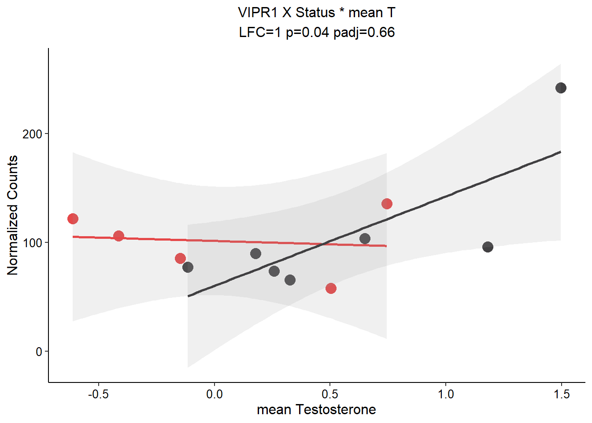
| model | AIC | deltaAIC | lm_p | DESeq2_raw_p |
|---|---|---|---|---|
| VIPR1 ~ Batch | 131.796 | NA | 0.528 | NA |
| VIPR1 ~ Batch + Status | 133.719 | -1.924 | 0.816 | 0.374 |
| VIPR1 ~ Batch + mean T | 130.893 | 0.902 | 0.151 | 0.130 |
| VIPR1 ~ Batch + Status * mean T | 129.034 | 2.761 | 0.096 | 0.040 |
Arcopallium Intermedium (Ai)
| Test | gene | baseMean | log2FoldChange | lfcSE | stat | pvalue | padj |
|---|---|---|---|---|---|---|---|
| mean T | PGR | 28.989 | -0.530 | 0.237 | -2.237 | 0.025 | 0.499 |
| mean T | VIP | 251.548 | 0.373 | 0.158 | 2.355 | 0.019 | 0.427 |
| Status | PRLR | 259.391 | -0.423 | 0.199 | -2.122 | 0.034 | 0.592 |
| Strength | VIP | 251.548 | 0.229 | 0.103 | 2.218 | 0.027 | 0.427 |

Interaction in the Arcopallium Intermedium
AVP
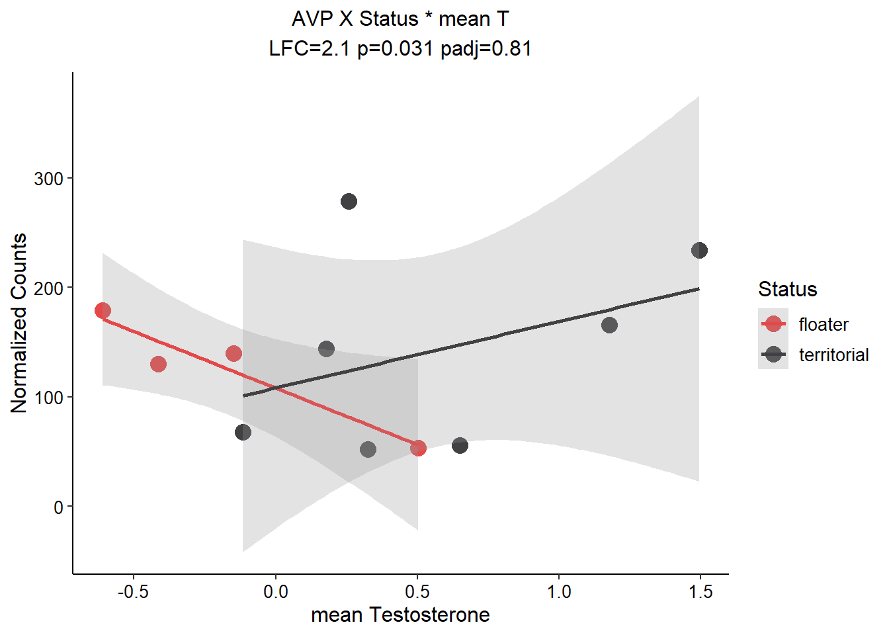
| model | AIC | deltaAIC | lm_p | DESeq2_raw_p |
|---|---|---|---|---|
| AVP ~ 1 | 129.443 | NA | NA | NA |
| AVP ~ Status | 131.298 | -1.855 | 0.738 | 0.843 |
| AVP ~ mean T | 131.130 | -1.687 | 0.623 | 0.644 |
| AVP ~Status * mean T | 131.940 | -2.497 | 0.169 | 0.031 |
Looks like the parameterised model is worse than the null model.
AVPR1A
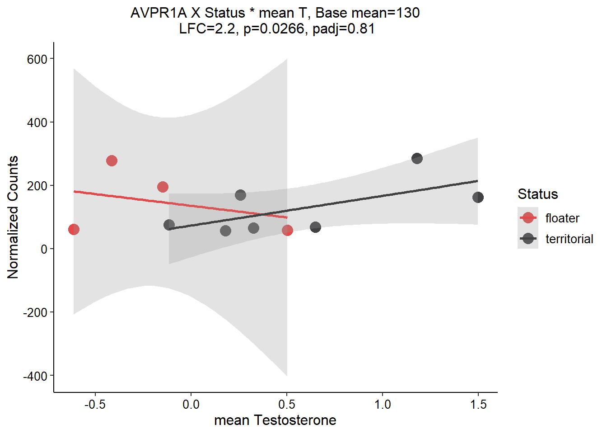
Not very convincing
| model | AIC | lm_p | DESeq2_raw_p |
|---|---|---|---|
| AVPR1A ~ 1 | 132.860 | NA | NA |
| AVPR1A ~ Status | 134.692 | 0.719 | 0.404 |
| AVPR1A ~ mean T | 134.539 | 0.618 | 0.610 |
| AVPR1A ~Status * mean T | 135.096 | 0.216 | 0.027 |
And indeed this model does not appear to be bette either
###VIPR1
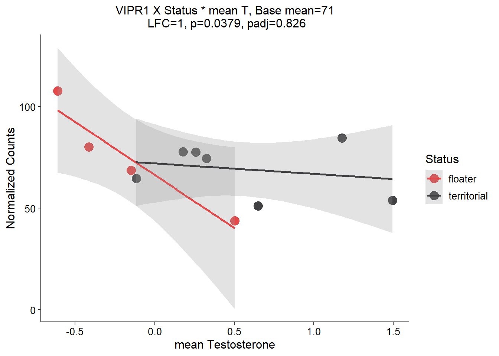
| model | AIC | deltaAIC | lm_p | DESeq2_raw_p |
|---|---|---|---|---|
| VIPR1 ~ 1 | 97.595 | NA | NA | NA |
| VIPR1 ~ Status | 99.283 | -1.687 | 0.623 | 0.843 |
| VIPR1 ~ mean T | 96.281 | 1.315 | 0.109 | 0.644 |
| VIPR1 ~Status * mean T | 92.123 | 5.473 | 0.031 | 0.038 |
Checking other multiple hits in the AI
VIP
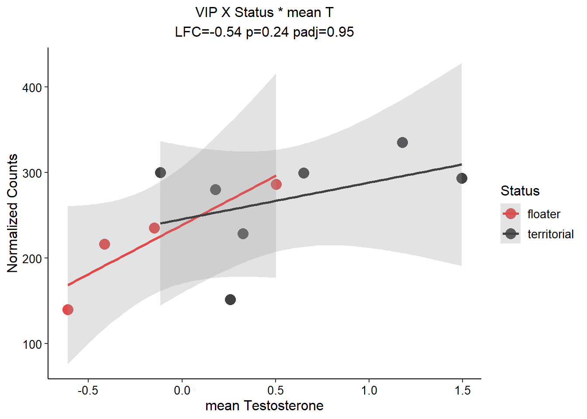
| model | AIC | deltaAIC | lm_p | DESeq2_raw_p |
|---|---|---|---|---|
| VIP ~ 1 | 125.360 | NA | NA | NA |
| VIP ~ Strength | 122.290 | 3.070 | 0.047 | 0.027 |
| VIP ~ Status | 125.416 | -0.057 | 0.220 | 1.000 |
| VIP ~ mean T | 121.385 | 3.974 | 0.031 | 0.019 |
| VIP ~ Status * mean T | 123.986 | 1.373 | 0.366 | 0.236 |
Ok, looks like it’s tricky to distinguish between the two interest models ~ Strength and ~ Mean T
We have some very low absolute expression here too…
Lateral Septum (LS)
| Test | gene | baseMean | log2FoldChange | lfcSE | stat | pvalue | padj |
|---|---|---|---|---|---|---|---|
| Status | GNRH1 | 22.089 | 1.383 | 0.686 | 2.017 | 0.044 | 0.927 |
| Status | SRD5A2 | 83.943 | 0.670 | 0.192 | 3.492 | 0.000 | 0.365 |
| Status | VIP | 19.078 | -1.440 | 0.681 | -2.116 | 0.034 | 0.895 |
| Strength | GNRH1 | 23.067 | 1.126 | 0.339 | 3.324 | 0.001 | NA |

Interactions in the Lateral Septum
AR
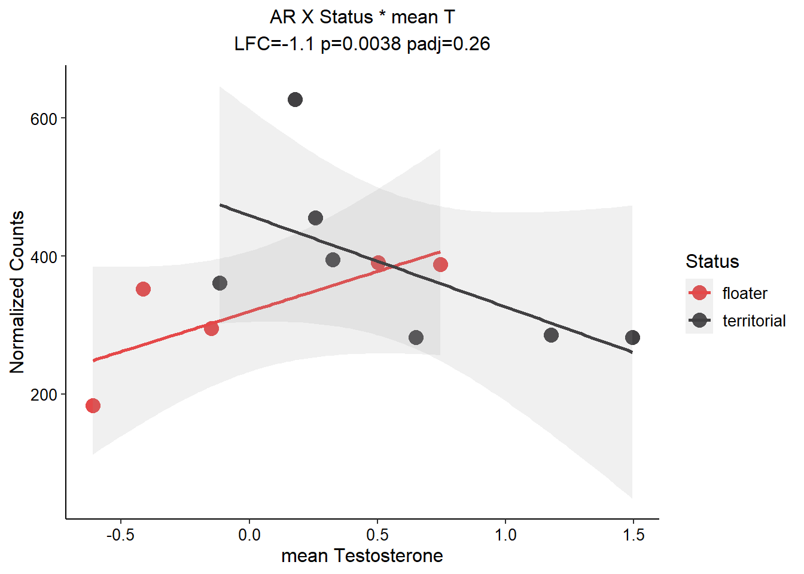
| model | AIC | deltaAIC | lm_p | DESeq2_raw_p |
|---|---|---|---|---|
| AR ~ 1 | 150.138 | NA | NA | NA |
| AR ~ Status | 151.096 | -0.958 | 0.363 | 0.324 |
| AR ~ mean T | 152.137 | -1.999 | 0.978 | 0.976 |
| AR ~ Status * mean T | 148.336 | 1.802 | 0.044 | 0.004 |
Bed Nucleus of the Stria Terminalis (BSTm)
| Test | gene | baseMean | log2FoldChange | lfcSE | stat | pvalue | padj |
|---|---|---|---|---|---|---|---|
| Status | AR | 691.964 | 0.567 | 0.168 | 3.379 | 0.001 | 0.210 |
| Strength | ESR2 | 381.353 | -0.299 | 0.150 | -1.989 | 0.047 | 0.604 |
| Strength | PGR | 174.573 | -0.334 | 0.096 | -3.461 | 0.001 | 0.152 |

Interactions in the Bed Nucleus of the Stria Terminalis
ESR1
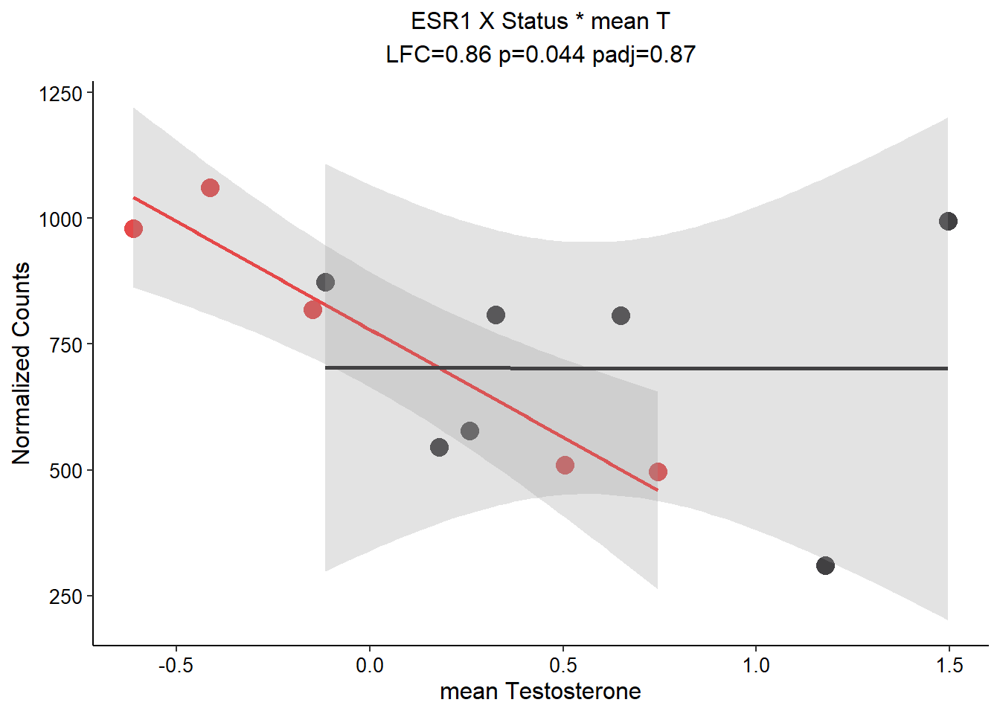
| model | AIC | deltaAIC | lm_p | DESeq2_raw_p |
|---|---|---|---|---|
| ESR1 ~ 1 | 168.264 | NA | NA | NA |
| ESR1 ~ + Status | 169.980 | -1.716 | 0.635 | 0.666 |
| ESR1 ~ mean T | 167.759 | 0.505 | 0.159 | 0.167 |
| ESR1 ~ Status * mean T | 167.454 | 0.810 | 0.102 | 0.044 |
ESR2
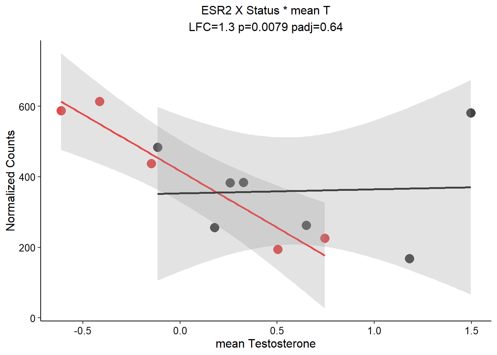
| model | AIC | deltaAIC | lm_p | DESeq2_raw_p |
|---|---|---|---|---|
| ESR2 ~ 1 | 158.939 | NA | NA | NA |
| ESR2 ~ Status | 160.599 | -1.660 | 0.635 | 0.408 |
| ESR2 ~ mean T | 158.141 | 0.798 | 0.159 | 0.161 |
| ESR2 ~ Strength | 158.301 | 0.638 | 0.148 | 0.047 |
| ESR2 ~ Status * mean T | 155.896 | 3.042 | 0.102 | 0.008 |
Heat map of all candidate genes

## png
## 2